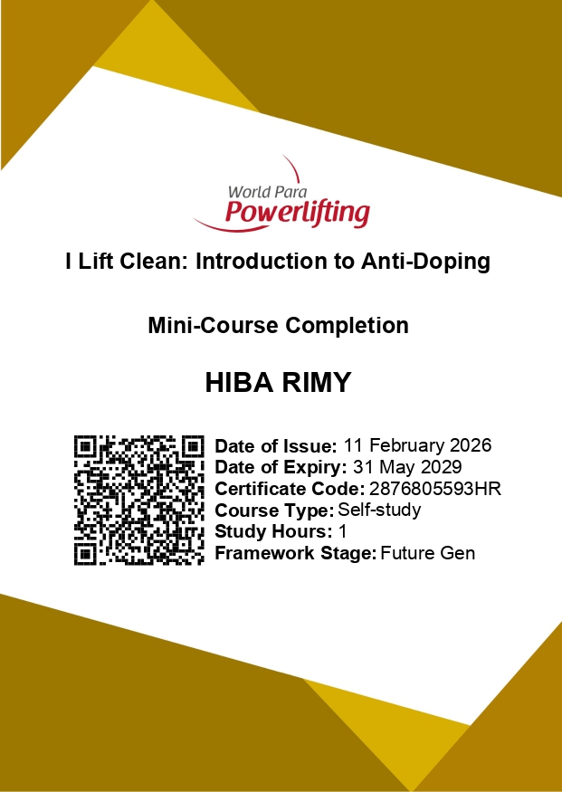
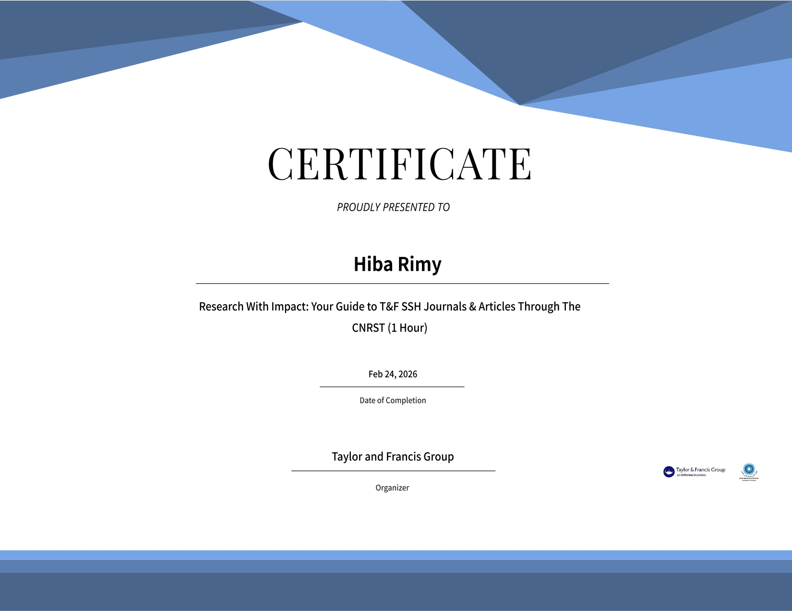
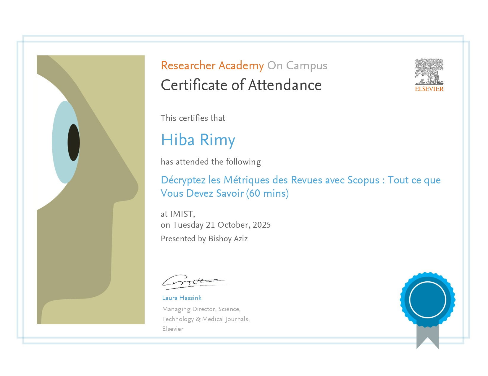
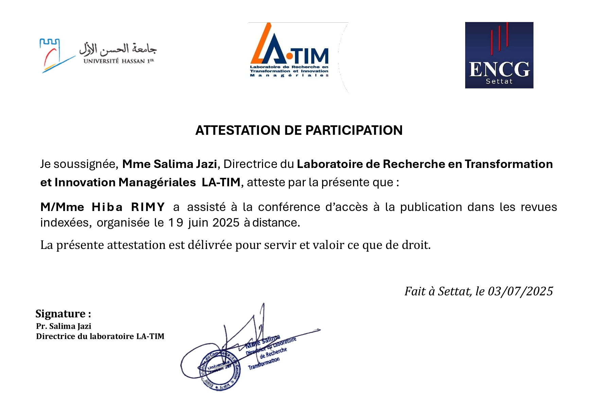

About me
A dedicated athlete, free spirit, and highly determined individual, driven by passion, discipline, and continuous self-improvement. PhD student and researcher in Sports Sciences at Hassan First University in Settat, specializing in AI-driven methodologies and mobile biomechanical technologies for the assessment and optimization of explosive human performance. My work focuses on advanced movement analysis, objective performance evaluation, and the development of data-driven tools that support evidence-based training and technical refinement through the integration of artificial intelligence, biomechanics, and applied performance science.
What I do
-
Scientific Research
As a PhD candidate at Hassan First University, I research AI-driven methods for athletic performance enhancement. My work bridges biomechanics, technology, and evidence-based training.
-
Movement Analysis and Technological Innovation
I use advanced tools such as IMUs, force platforms, and EMG/EEG sensors to analyze movement and optimize performance. This allows for precise, data-driven technical refinement in real training environments.
-
Mental and Psychological Preparation
I focus on mental readiness by integrating sport psychology, neuromuscular science, and wellness strategies. My approach aligns physical performance with cognitive preparation and long-term athlete health.
-
Anti-Doping Advocacy and Sports Ethics
I am committed to clean sport, fair play, and ethical training. My certified anti-doping expertise supports athlete education, integrity, and awareness of international standards. I advocate for healthy, transparent, sustainable environments that protect athletes' well-being and development.
-
Coaching Expertise and Athletic Excellence
As a former Moroccan National Swimming Champion and national fencing team member, I combine elite athletic discipline with strong coaching experience. My background enables me to effectively develop athletes’ skills, teamwork, and performance.
Certifications
-

Research Presentation Certificate
A certificate awarded in recognition of participation in the international congress with a research poster presentation in the field of sports performance and athlete strength.
-

Organizing Committee Certificate
A certificate awarded in recognition of active involvement as a member of the organizing committee of an international congress in sports science and football performance in Berkane/Morocco.
-

Clarivate - Certificate
-

Clarivate - Certificate
-

Clarivate - Certificate
-

Clarivate - Certificate
-

Clarivate - Research Ethics
Ethical Considerations in Scientific Publishing & Peer Review.
-

Antalya Congress 2026
Oral Presentation: Wearable Technologies in Explosive Performance Assessment.
-

Black Sea Congress 2026
Oral Presentation: Comparing Plyometric Modalities for RSI Optimization.
-

EMUNI Slovenia 2025
Oral Presentation: Validation of IMUs and Force Platforms in explosive movement assessment.
-
_page-0001.jpg)
Euro-Parliament Conference: New Pact for the Mediterranean 2025
Participation in the High-Level Academic Conference in Brussels.
-

Anti-Doping Awareness Certificate
A certificate awarded for the successful completion of the “I Lift Clean: Introduction to Anti-Doping” mini-course, demonstrating foundational knowledge of anti-doping principles and clean sport practices.Participation in the High-Level Conference in Brussels Academic Cooperation Forum at Brussels.
-

Taylor & Francis Group Certificate
-

Taylor & Francis Group Certificate
-
_page-0001.jpg)
Taylor & Francis Group Certificate
-

Scopus Bibliometrics
Advanced Certification: Decoding Journal Metrics with Elsevier Scopus.
-

LA-TIM Indexing Specialist
Indexed Scientific Publication & Innovation Management (LA-TIM Laboratory).
-

Doctoral Training 2026
Advanced Methodology & Literature Review for PhD Research (Young Researchers Forum).
-

Training: LaTeX and AI for Automated Scientific Writing
This certificate from the Faculty of Legal and Political Sciences in Settat confirms attendance at a specialized workshop regarding the use of LaTeX and Artificial Intelligence to facilitate and automate the scientific writing process.
-

Scientific Training: From Statistical Analysis to Scientific Writing
Issued by the BIGOFC Laboratory at FSJES Ain Chock, this attestation validates participation in a program centered on advanced tools such as STATA, R, and SmartPLS, as well as data analysis and scientific writing techniques.
-

Training: Research Methodologies and Bibliometric Analysis (Passport to Success)
This certificate confirms participation in advanced training sessions covering bibliometric literature reviews alongside both qualitative and quantitative research approaches conducted between May and July 2025.
-

Training: Research Problem Definition and Thesis Planning (Passport to Success)
This document certifies participation in three modules focused on foundational research skills, including defining a research problem, managing time during a thesis, and identifying scientific dissemination opportunities.
-

Training: Scientific Publication and Literature Review (Passport to Success)
Part of the "Passport to Success" program at ENCG Settat, this certificate acknowledges completion of sessions on publishing in indexed journals and the methodologies for conducting a comprehensive literature review.
-

Summer School: Healthy and Active Lifestyle (HALS)
This certificate of completion recognizes the successful fulfillment of requirements for an international summer school program exploring kinesiology, exercise physiology, and the Mediterranean lifestyle, awarding the participant 3 ECTS credits.
-
_page-0001.jpg)
Cairn.info Training: Leveraging Digital Libraries for Research (December 2025)
This certificate confirms that Hiba Rimy attended an online training session on December 11, 2025, focused on optimizing the use of the Cairn.info digital library for academic research purposes.
-

Cairn.info Training: Platform Usage and Book Collections (October 2025)
This document certifies participation in a training session held on October 22, 2025, which provided an introduction to the Cairn.info platform, specifically highlighting the book collections available for testing during that period.